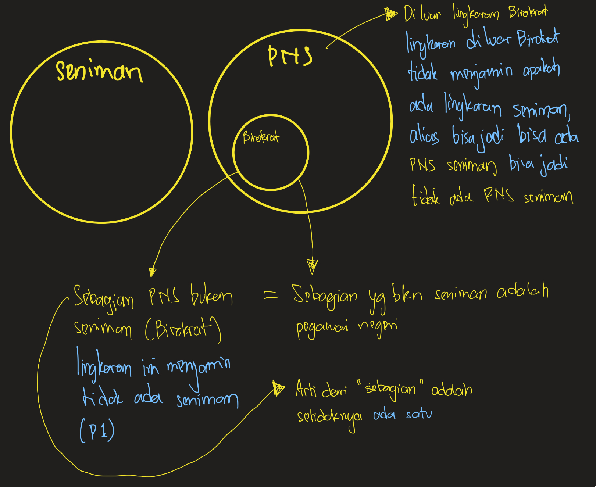

Latihan Silogisme 1
20 soal berdasarkan latihan-silogisme.md dengan jawaban dan pembahasan.
Tingkat 1Soal 1
Premis 1: Semua mamalia adalah hewan berdarah panas.
Premis 2: Semua kucing adalah mamalia.
Kesimpulan: ...
- A. Semua kucing adalah hewan berdarah panas.
- B. Beberapa kucing adalah hewan berdarah panas.
- C. Semua hewan berdarah panas adalah kucing.
- D. Tidak ada kesimpulan yang valid.
Jawaban: A
Penjelasan: Ini adalah contoh silogisme Barbara (AAA-1) yang valid. Jika semua kucing adalah mamalia, dan semua mamalia berdarah panas, maka semua kucing pasti berdarah panas.
Tingkat 1Soal 2
Premis 1: Semua buah-buahan mengandung vitamin.
Premis 2: Apel adalah buah-buahan.
Kesimpulan: ...
- A. Apel mengandung vitamin.
- B. Semua yang mengandung vitamin adalah apel.
- C. Beberapa buah tidak mengandung vitamin.
- D. Tidak ada kesimpulan yang valid.
Jawaban: A
Penjelasan: Ini adalah penerapan langsung dari premis. Jika semua buah mengandung vitamin dan apel adalah buah, maka apel pasti mengandung vitamin.
Tingkat 1Soal 3
Premis 1: Semua planet di tata surya mengorbit matahari.
Premis 2: Mars adalah planet di tata surya.
Kesimpulan: ...
- A. Mars mengorbit matahari.
- B. Semua benda langit yang mengorbit matahari adalah Mars.
- C. Matahari adalah sebuah planet.
- D. Tidak ada kesimpulan yang valid.
Jawaban: A
Penjelasan: Sama seperti soal sebelumnya, ini adalah penerapan langsung dari premis universal ke contoh spesifik (Mars).
Tingkat 1Soal 4
Premis 1: Semua koki bisa memasak.
Premis 2: Anton adalah seorang koki.
Kesimpulan: ...
- A. Anton bisa memasak.
- B. Semua orang yang bisa memasak adalah Anton.
- C. Anton tidak bisa memasak.
- D. Tidak ada kesimpulan yang valid.
Jawaban: A
Penjelasan: Jika semua koki bisa memasak, dan Anton adalah seorang koki, maka Anton pasti bisa memasak.
Tingkat 2Soal 5
Premis 1: Semua murid kelas 12 memakai seragam putih abu-abu.
Premis 2: Sebagian yang memakai seragam putih abu-abu pergi ke kantin.
Kesimpulan: ...
- A. Sebagian murid kelas 12 pergi ke kantin.
- B. Semua murid kelas 12 pergi ke kantin.
- C. Murid yang tidak ke kantin bukan murid kelas 12.
- D. Tidak ada kesimpulan yang valid.
Jawaban: bisa D bisa A
Penjelasan:
Jika didasarkan pada teori Yang Menyimpulkan TDDS (di file materi)
Kesimpulan tidak dapat ditarik karena kelompok "yang memakai seragam putih abu-abu" bisa lebih luas dari "murid kelas 12". Mereka yang pergi ke kantin bisa saja berasal dari kelompok tersebut tetapi bukan murid kelas 12.
Jika didasarkan pada teori Yang Menyimpulkan ada kesimpulan (di file materi)
Kesimpulan: Sebagian murid kelas 12 pergi ke kantin.
Tingkat 2Soal 6
Premis 1: Beberapa dosen adalah peneliti.
Premis 2: Semua peneliti harus rajin membaca.
Kesimpulan: ...
- A. Sebagian dosen harus rajin membaca.
- B. Semua dosen harus rajin membaca.
- C. Semua yang rajin membaca adalah dosen.
- D. Dosen tidak perlu membaca.
Jawaban: A
Penjelasan: Karena ada sebagian dosen yang juga peneliti, dan semua peneliti harus rajin membaca, maka sebagian dosen tersebut juga harus rajin membaca.
Tingkat 2Soal 7
Premis 1: Semua bunga mawar berwarna merah.
Premis 2: Sebagian bunga di taman adalah bunga mawar.
Kesimpulan: ...
- A. Sebagian bunga di taman berwarna merah.
- B. Semua bunga di taman berwarna merah.
- C. Semua yang berwarna merah adalah bunga dari taman.
- D. Tidak ada kesimpulan yang valid.
Jawaban: A
Penjelasan:
Urutan premis bisa dibalik:
Sebagian bunga di taman (r) adalah bunga mawar (p).
Semua bunga mawar (p) berwarna merah. (q)
Kesimpulan: r->q = Sebagian bunga di taman berwarna merah.
Tingkat 2Soal 8
Premis 1: Ikan bernapas dengan insang.
Premis 2: Beberapa hewan peliharaan adalah ikan.
Kesimpulan: ...
- A. Beberapa hewan peliharaan bernapas dengan insang.
- B. Semua hewan peliharaan bernapas dengan insang.
- C. Semua hewan yang bernapas dengan insang adalah hewan peliharaan.
- D. Hewan peliharaan tidak bernapas dengan insang.
Jawaban: A
Penjelasan:
Urutan premis bisa dibalik:
Beberapa hewan peliharaan (r) adalah ikan (p).
Ikankan (p) bernapas dengan insang (q).
Kesimpulan: r->q = Beberapa hewan peliharaan bernapas dengan insang.
Tingkat 3Soal 9
Premis 1: Semua unggas adalah hewan bertelur.
Premis 2: Buaya bukan unggas.
Kesimpulan: ...
- A. Buaya tidak bertelur.
- B. Semua hewan yang bertelur adalah unggas.
- C. Sebagian hewan yang bukan unggas bertelur.
- D. Tidak ada kesimpulan yang valid.
Jawaban: D
Penjelasan:
Semua unggas adalah (p) hewan bertelur (q).
Buaya bukan unggas (~p).
Kesimpulan: TDDS, melawan anteseden (baca materi).
Tingkat 3Soal 10
Premis 1: Tidak ada seniman yang merupakan birokrat.
Premis 2: Semua birokrat adalah pegawai negeri.
Kesimpulan: ...
- A. Sebagian pegawai negeri bukan seniman.
- B. Tidak ada seniman yang merupakan pegawai negeri.
- C. Semua pegawai negeri adalah seniman.
- D. Sebagian seniman adalah pegawai negeri.
Jawaban: A
Penjelasan:

Premis 1 bisa diubah menjadi:
- Premis 1: Semua seniman bukan birokrat
- Premis 2: Semua birokrat adalah pegawai negeri
Kesimpulan:
- Sebagian pegawai negeri bukan seniman; atau ekuivalen
- Sebagian yang bukan seniman adalah pegawai negeri
Saat menjawab ini saya muncul pertanyaan, jika "Sebagian pegawai negeri bukan seniman" benar, bukankah "Sebagian pegawai negeri adalah seniman" benar juga?
Pernyataan "sebagian" dalam logika hanya berarti "setidaknya ada satu". Mari kita lihat apa yang sebenarnya dikatakan oleh masing-masing kalimat:
- "Sebagian pegawai negeri bukan seniman": Ini hanya mengonfirmasi bahwa ada minimal satu orang pegawai negeri yang tidak berprofesi sebagai seniman. Pernyataan ini tidak memberikan informasi apa pun tentang sisa pegawai negeri lainnya.
- "Sebagian pegawai negeri adalah seniman": Ini mengonfirmasi bahwa ada minimal satu orang pegawai negeri yang juga seorang seniman.
Selanjutnya merupakan alasan kenapa jawaban lainnya salah:
Opsi "B. Tidak ada seniman yang merupakan pegawai negeri" salah karena tidak ada pernyataan mengenai PNS lain selain birokrat, bisa jadi ada seniman yang PNS bisa jadi juga tidak ada (dijelaskan di ilustrasi)
Opsi "C. Semua pegawai negeri adalah seniman" salah karena jelas bertentangan dengan premis, karena ada PNS birokrat (yang pasti bukan seniman (P2))
Opsi "D. Sebagian seniman adalah pegawai negeri" salah karena sama halnya dengan opsi B, tidak ada pernyataan mengenai apakah ada seniman yang merupakan PNS
Tingkat 3Soal 11
Premis 1: Sebagian besar karyawan di perusahaan X mendapat bonus.
Premis 2: Rina adalah karyawan di perusahaan X.
Kesimpulan: ...
- A. Rina mungkin mendapat bonus.
- B. Rina pasti mendapat bonus.
- C. Rina tidak mendapat bonus.
- D. Semua karyawan di perusahaan X bernama Rina.
Jawaban: A
"Sebagian besar" memberi indikasi probabilitas tinggi, bukan kepastian. Maka kesimpulan yang tepat adalah kemungkinan (bukan pasti).
Tingkat 3Soal 12
Premis 1: Semua peserta ujian membawa pensil.
Premis 2: Sebagian peserta ujian tidak memakai jam tangan.
Kesimpulan: ...
- A. Sebagian peserta ujian yang membawa pensil tidak memakai jam tangan.
- B. Semua peserta ujian yang tidak memakai jam tangan membawa pensil.
- C. Peserta ujian yang membawa pensil pasti tidak memakai jam tangan.
- D. Tidak ada kesimpulan yang valid.
Jawaban: A dan B
Penjelasan: Dari premis, kita tahu ada sekelompok peserta ujian yang tidak memakai jam tangan. Karena semua peserta ujian (termasuk kelompok ini) membawa pensil, maka kesimpulan A dan B keduanya valid.
Baca Al-Faiz 196-197 (Tipe 3 dan Tipe 4).
Tingkat 4Soal 13
Premis 1: Sebagian atlet profesional memiliki cedera lutut.
Premis 2: Semua yang memiliki cedera lutut harus menjalani fisioterapi.
Premis 3: Fisioterapi membutuhkan biaya yang mahal.
Kesimpulan: ...
- A. Sebagian atlet profesional membutuhkan perawatan yang mahal.
- B. Semua atlet profesional memiliki cedera lutut.
- C. Fisioterapi hanya untuk atlet profesional.
- D. Semua perawatan mahal adalah untuk cedera lutut.
Jawaban: A
Penjelasan:
Sebagian atlet profesional (p) memiliki cedera lutut (q).
Semua yang memiliki cedera lutut (q) harus menjalani fisioterapi (r).
Fisioterapi (r) membutuhkan biaya yang mahal (s).
Kesimpulan: p->s = Sebagian atlet profesional membutuhkan perawatan yang mahal.
Tingkat 4Soal 14
Premis 1: Jika hari ini hujan, maka jalanan menjadi basah.
Premis 2: Jika jalanan basah, maka lalu lintas menjadi macet.
Premis 3: Hari ini tidak hujan.
Kesimpulan: ...
- A. Lalu lintas tidak macet.
- B. Jalanan tidak basah.
- C. Jalanan basah tapi lalu lintas tidak macet.
- D. Tidak ada kesimpulan yang valid.
Jawaban: D
Penjelasan: Premis ketiga menyatakan "Hari ini tidak hujan". Ini membatalkan kondisi awal dari rantai sebab-akibat. Tidak adanya hujan tidak secara otomatis berarti jalanan tidak basah atau lalu lintas tidak macet, karena bisa ada penyebab lain.
Jika hari ini hujan (p), maka jalanan menjadi basah (q).
Jika jalanan basah (q), maka lalu lintas menjadi macet (r).
Hari ini tidak hujan (~p).
Kesimpulan: TDDS, melawan anteseden (baca materi).
Tingkat 4Soal 15
Premis 1: Semua alat elektronik yang canggih harganya mahal.
Premis 2: Sebagian ponsel pintar adalah alat elektronik yang canggih.
Premis 3: Beberapa alat elektronik yang harganya mahal tidak awet.
Kesimpulan: ...
- A. Sebagian ponsel pintar harganya mahal.
- B. Semua ponsel pintar tidak awet.
- C. Semua alat elektronik yang mahal adalah ponsel pintar.
- D. Tidak ada kesimpulan valid mengenai keawetan ponsel pintar.
Jawaban: A
Penjelasan: Dari Premis 1 dan 2, dapat disimpulkan bahwa sebagian ponsel pintar harganya mahal. Premis 3 tentang keawetan adalah informasi tambahan yang tidak berhubungan langsung dengan kesimpulan mengenai harga ponsel pintar (distraktor).
Tingkat 4Soal 16
Premis 1: Tidak ada sayuran yang rasanya manis seperti buah.
Premis 2: Wortel adalah sayuran.
Premis 3: Sebagian makanan manis disukai anak-anak.
Kesimpulan: ...
- A. Wortel tidak terasa manis seperti buah.
- B. Anak-anak tidak suka wortel.
- C. Semua makanan yang disukai anak-anak adalah buah.
- D. Tidak ada kesimpulan yang valid.
Jawaban: A
Penjelasan: Kesimpulan ini ditarik langsung dari Premis 1 dan 2. Jika tidak ada sayuran yang manis seperti buah, dan wortel adalah sayuran, maka wortel tidak terasa manis seperti buah. Premis 3 adalah distraktor.
Tingkat 5Soal 17
Premis 1: Semua mahasiswa yang lulus cumlaude pasti memiliki IPK di atas 3,5.
Premis 2: Beberapa mahasiswa yang aktif berorganisasi tidak lulus cumlaude.
Premis 3: Setiap mahasiswa yang memiliki IPK di atas 3,5 mendapat beasiswa.
Kesimpulan: ...
- A. Semua mahasiswa yang lulus cumlaude mendapat beasiswa.
- B. Semua mahasiswa yang mendapat beasiswa lulus cumlaude.
- C. Sebagian mahasiswa yang mendapat beasiswa tidak aktif berorganisasi.
- D. Tidak ada kesimpulan yang valid.
Jawaban: A
Penjelasan: Premis 2 adalah distraktor
Tingkat 5Soal 18
Premis 1: Jika lampu merah menyala dan tidak ada polisi, beberapa pengendara akan menerobos.
Premis 2: Saat ini lampu merah menyala, tetapi ada polisi di persimpangan.
Kesimpulan: ...
- A. Beberapa pengendara tidak akan menerobos.
- B. Semua pengendara akan berhenti.
- C. Polisi akan menerobos lampu merah.
- D. Tidak ada kesimpulan yang valid.
Jawaban: D
Penjelasan: Kondisi pada premis 1 ("lampu merah menyala DAN tidak ada polisi") tidak terpenuhi karena pada premis 2 disebutkan ada polisi. Oleh karena itu, tidak ada kesimpulan yang bisa ditarik mengenai perilaku pengendara.
Tingkat 5Soal 19
Premis 1: Hanya jika bahan baku berkualitas dan proses produksi higienis, maka produk makanan dianggap aman.
Premis 2: Produk makanan merek Z dianggap tidak aman.
Kesimpulan: ...
- A. Bahan baku produk Z tidak berkualitas, atau proses produksinya tidak higienis, atau keduanya.
- B. Bahan baku produk Z pasti tidak berkualitas.
- C. Proses produksi produk Z pasti tidak higienis.
- D. Bahan baku produk Z tidak berkualitas dan proses produksinya tidak higienis.
Jawaban (umum pada soal ujian): A
Kalimat "A jika dan hanya jika B" berarti dua hal sekaligus:
1. Jika A, maka B.
2. Jika B, maka A.
Berdasarkan premis 1, syarat untuk makanan dianggap aman adalah bahan baku berkualitan DAN proses produksi higienis. Karena fakta adalah produk makanan merek Z dianggap tidak aman, maka setidaknya salah satu dari dua syarat tersebut tidak terpenuhi (menggunakan konjungsi ATAU). Sehingga jawaban "Bahan baku produk Z tidak berkualitas, atau proses produksinya tidak higienis, atau keduanya"
Tingkat 5Soal 20
Premis 1: Semua pahlawan adalah orang yang berjasa.
Premis 2: Beberapa orang yang berjasa tidak dikenal oleh masyarakat.
Premis 3: Tidak ada orang yang tidak dikenal masyarakat yang mendapat penghargaan resmi.
Kesimpulan: ...
- A. Sebagian pahlawan tidak mendapat penghargaan resmi.
- B. Tidak ada pahlawan yang dikenal oleh masyarakat.
- C. Semua orang yang berjasa adalah pahlawan.
- D. Semua pahlawan mendapat penghargaan resmi.
Jawaban: bisa A atau TDDS (baca materi).
Penjelasan:
Jika didasarkan pada teori Yang Menyimpulkan ada kesimpulan (baca materi):
Kelompok "orang yang berjasa" yang "tidak dikenal masyarakat" tidak dijamin mencakup para pahlawan. Bisa jadi semua pahlawan dikenal masyarakat. Karena itu, kita tidak bisa menyimpulkan apapun tentang pahlawan dan penghargaan resmi dari premis yang ada.
Jika didasarkan pada teori Yang Menyimpulkan TDDS (baca materi):
Premisnya diubah agar mudah dipahami:
Sebagian pahlawan (p) adalah orang yang berjasa (q).
Beberapa orang yang berjasa (q) tidak dikenal oleh masyarakat (r).
Semua orang yang tidak dikenal masyarakat (r) tidak mendapat penghargaan resmi (s).
Kesimpulan: p->s = Sebagian pahlawan tidak mendapat penghargaan resmi.
Tingkat 3Soal 21
Premis 1: Polisi harus lulus uji ketahanan fisik.
Premis 2: Sebagian polisi sedang menderita cedera otot.
Kesimpulan: ...
- A. Polisi yang lulus uji ketahanan fisik adalah polisi yang cedera otot.
- B. Hanya sebagian saja polisi yang lulus uji ketahanan fisik.
- C. Ada polisi yang lulus uji ketahanan fisik tetapi cedera otot.
- D. Tidak ada polisi yang cedera otot yang dapat lulus uji ketahanan fisik.
- E. Semua polisi yang sedang cedera otot tidak ikut uji ketahanan fisik.
Jawaban: C
Penjelasan: Premis 1 menyatakan bahwa semua polisi lulus uji. Premis 2 menyatakan ada polisi yang cedera. Dengan menggabungkan keduanya, kita dapat menyimpulkan bahwa ada polisi yang cedera tersebut, dan mereka juga harus lulus uji. Maka, kesimpulan yang paling tepat adalah "Ada polisi yang lulus uji ketahanan fisik tetapi cedera otot".
Catatan: Opsi B secara langsung bertentangan dengan Premis 1 yang bersifat universal ("Polisi *harus* lulus..."). Namun, perlu dicatat bahwa di platform Ayocpns, jawaban untuk soal ini adalah B. Kesalahan umum pada soal seperti ini adalah mengimpor asumsi dunia nyata (misalnya, cedera menghalangi kelulusan) yang bertentangan dengan premis yang diberikan.
Ingin versi interaktif (klik untuk buka/tutup pembahasan, kuis otomatis, atau ringkasan skor)? Beri tahu saya; kita bisa menambahkannya bertahap.